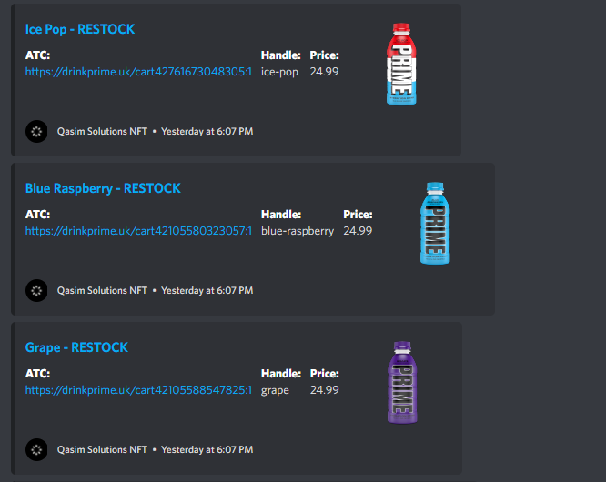

Prime Hydration Monitor
This project allowed me to further develop my skills when it comes to how different businesses build their online stores. The Prime Hydration store is built on the Shopify platform, due to this I was able to gain an understanding of how the internal product stock management works on Shopify. Once I knew how to check if all the available products are in stock or not, it was simple to integrate onto Discord using a command based system to trigger a monitoring process for the website. The reason why I built this aside gaining more knowledge is because Prime Hydration is very hard to purchase at the moment, the company currently has a 1% market of the hydration beverage market which is quite an accomplishment for a company that was made under a year ago. The company is owned by Logan Paul and KSI which contributes to the extreme demand for the drink, it is currently being resold on the secondary market with a 500% profit margin. With this in mind, it is quite useful for people that want to purchase the drink for their own enjoyment but also to gain profit from selling it on the aftermarket. I also implemented an ATC feature that will make the checkout process a lot faster, when a user clicks the link provided when a product restocks, it will direct them to the checkout page as it automatically puts the product in a cart for them.